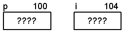
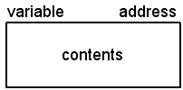
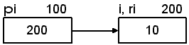
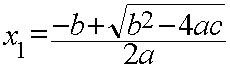
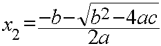

| After declarations for i and p | After assignment to p | After assignment to i |
|---|---|---|
 |
|
|
Brief Pointer and Memory Review
Here's a brief review of pointers and memory:We can declare pointer variables easily:
void foo()
{
int i; /* i can only store integer values */
/* The value of i is undefined at this point */
int *p; /* p can only store the address of an integer */
/* The value of p is undefined at this point */
p = &i; /* The value of p is now the address of i */
i = 10; /* The value of i is now 10 */
}
This is the notation that will be used when talking about variables in memory:

Visualizing the code above:
One important thing to realize is that once you name a memory location, that name can not be used for another memory location (in the same scope). In other words, once you bind a name to a memory location, you can't unbind it:
After declarations for i and p After assignment to p After assignment to i 

In the diagrams above, you can see that it is possible to modify i's value in two different ways.int i; /* i is the name of this memory location */ float i; /* i is now attempting to "rename" this memory location (not legal) */
i = 20; /* The value of i is now 20 */
In fact, we can have any number of pointers pointing to i:*p = 30; /* The value of i is now 30 */
Each symbol (name, variable, etc.) can only be associated with one address, which is why this is illegal:
You can only associate one address with one name. However, as we'll soon see, you can associate multiple names with one address.int X; // bind X to some address float X; // error, X is already bound to an address double X; // error, X is already bound to an address
References
A reference can be thought of as an alias for another variable (i.e. a memory location). This means that a reference, unlike a pointer, does not take up any additional memory. A reference is just another name for an object. An example with a diagram will make it clearer:
int i = 10; // i represents an address, requires 4 bytes, holds the value 10
int *pi = &i; // pi is a pointer, requires 4 or 8 bytes bytes, holds the address of i
int &ri = i; // ri is an alias (another name) for i, requires no storage
// we call this alias a reference

i = 20; // i (and ri) is now 20 ri = 30; // i (and ri) is now 30 *pi = 40; // i (and ri) is now 40
Output:std::cout << " i is " << i << std::endl; std::cout << "ri is " << ri << std::endl; std::cout << "address of i is " << &i << std::endl; std::cout << "address of ri is " << &ri << std::endl;
Compare that with pi, which is a separate entity in the program:i is 40 ri is 40 address of i is 0012FE00 address of ri is 0012FE00
Output:std::cout << "pi is " << pi << std::endl; std::cout << "*pi is " << *pi << std::endl; std::cout << "address of pi is " << &pi << std::endl;
When you declare a reference, you must initialize it. You can't have any unbound references (or variables for that matter). In this respect, it is much like a constant pointer that must be associated with something when it is declared:pi is 0012FE00 *pi is 40 address of pi is 0012FDF4
The error message for the uninitialized reference will be something like this:int i; // i is bound to a memory location by the compiler int &r1 = i; // r1 is bound to the same memory location as i int &r2; // error: r2 is not bound to anything int * const p1 = &i; // Ok, p1 points to i int * const p2; // error, p2 must be initialized p1 = &i; // error, p1 is a constant so you can't modify it
Of course, just like when you first learned about pointers, your response was: "Yeah, so what?"error: 'r2' declared as reference but not initialized
Recall this example:
The results of the definitions above are 100% identical to this:int i; // i is bound to a memory location by the compiler int &ri = i; // r1 is bound to the same memory location as i
Note:int ri; // ri is bound to a memory location by the compiler int &i = ri; // i is bound to the same memory location as ri
In the examples above, there is absolutely, positively, no difference between i and ri. None. Nada. Zero. Zip. They are just two different names for the same thing. Please remember that. In fact, at runtime, there is no way to tell if the program was using i or ri when accessing the integer. They are the SAME thing.
Reference Parameters
We don't often create a reference (alias) for another variable since it rarely provides any benefit. Like pointers, the real benefit comes from using references as parameters to functions.We know that, by default, parameters are passed by value. If we want the function to modify the parameters, we need to pass the address of the data we want modified. The scanf function is a classic example:
int a, b, c;
scanf("%d%d%d", &a, &b, &c); // scanf can modify a, b, and c
|
|
|
|
|
|
Note: When you pass a parameter by reference, you are actually passing an address to the function. Roughly speaking, you get pass-by-address semantics with pass-by-value syntax. The compiler is doing all of the necessary dereferencing for you behind the scenes.
This example allows us to return two values from a function. We'll be evaluating the quadratic formula:
 The code:
// Helper function
float calculate_discriminant(float a, float b, float c)
{
return b * b - 4 * a * c;
}
void calculate_quadratic(float a, float b, float c, float &root1, float &root2)
{
float discriminant = calculate_discriminant(a, b, c);
float pos_numerator = -b + std::sqrt(discriminant);
float neg_numerator = -b - std::sqrt(discriminant);
float denominator = 2 * a;
// root1 and root2 were passed in as references
root1 = pos_numerator / denominator;
root2 = neg_numerator / denominator;
}
float a = 1.0f, b = 4.0f, c = 2.0f; float root1, root2; // These are NOT references! // Calculate both roots (root1 and root2 are passed by reference) calculate_quadratic(a, b, c, root1, root2); std::cout << "a = " << a << ", b = " << b; std::cout << ", c = " << c << std::endl; std::cout << "root1 = " << root1 << std::endl; std::cout << "root2 = " << root2 << std::endl; Output: a = 1, b = 4, c = 2 root1 = -0.585786 root2 = -3.41421
Another example:
Using values:
/* Assumes there is at least one element in the array */
int find_largest1(int a[], int size)
{
int max = a[0]; /* assume 1st is largest */
for (int i = 1; i < size; i++)
if (a[i] > max)
max = a[i]; /* found a larger one */
return max; /* max is the largest */
}
int a[] = {4, 5, 3, 9, 5, 2, 7, 6};
int size = sizeof(a) / sizeof(*a);
int largest = find_largest1(a, size);
std::cout << "Largest value is " << largest << std::endl;
Using pointers:
/* Assumes there is at least one element in the array */
int* find_largest2(int a[], int size)
{
int max = 0; /* assume 1st is largest */
for (int i = 1; i < size; i++)
if (a[i] > a[max])
max = i; /* found a larger one */
return &a[max]; /* return the largest */
}
// Have to dereference the returned pointer largest = *find_largest2(a, size); std::cout << "Largest value is " << largest << std::endl;
Using references:
/* Assumes there is at least one element in the array */
int& find_largest3(int a[], int size)
{
int max = 0; /* assume 1st is largest */
for (int i = 1; i < size; i++)
if (a[i] > a[max])
max = i; /* found a larger one */
return a[max]; /* return the largest */
}
Notes:largest = find_largest3(a, size); std::cout << "Largest value is " << largest << std::endl;
Default Parameters
Examples:Change the formatting:
Function Calling function void print_array(int a[], int size) { for (int i = 0; i < size; i++) { std::cout << a[i]; if (i < size - 1) std::cout << ", "; } std::cout << std::endl; }int a[] = {4, 5, 3, 9, 5, 2, 7, 6}; int size = sizeof(a) / sizeof(*a); print_array(a, size); Output: 4, 5, 3, 9, 5, 2, 7, 6
Adding a default parameter to the function:
Function Calling function void print_array2(int a[], int size) { for (int i = 0; i < size; i++) std::cout << a[i] << std::endl; }int a[] = {4, 5, 3, 9, 5, 2, 7, 6}; int size = sizeof(a) / sizeof(*a); print_array2(a, size); Output: 4 5 3 9 5 2 7 6
void print_array(int a[], int size, bool newlines = false)
{
for (int i = 0; i < size; i++)
{
std::cout << a[i];
if (i < size - 1)
if (newlines)
std::cout << std::endl;
else
std::cout << ", ";
}
std::cout << std::endl;
}
// Calls with (a, size, false) print_array(a, size); print_array(a, size, false); // Calls with (a, size, true) print_array(a, size, true);
Another example:
Using default parameters:
Function Calling code int& Inc(int& value, int amount) { value += amount; return value; }
Function Calling code int& Inc(int& value, int amount = 1) { value += amount; return value; }
11 12 14 18 23
i = 10; std::cout << Inc(Inc(Inc(i, 5))) << std::endl;
main.cpp:282:27: error: cannot bind non-const lvalue reference of type 'int&'' to an rvalue of type 'int'
std::cout << Inc(Inc(Inc(i, 5))) << std::endl;
~~~^~~~~~
main.cpp:263:5: note: initializing argument 1 of 'int Inc(int&, int)'
int Inc(int& value, int amount = 1)
^~~
int i = 10;
// This is a single statement
std::cout << Inc(i) << std::endl
<< Inc(i) << std::endl
<< Inc(i, 2) << std::endl
<< Inc(i, 4) << std::endl;
This is what the assembly code might look like:Inc(i, 5); // The user provides the 5 Inc(i); // The compiler provides the 1
You can have multiple default parameters and they must default right to left:Inc(i, 5); 0041E806 push 5 ; push 5 on the stack 0041E808 lea eax,[i] ; get address of i 0041E80B push eax ; and push it on the stack 0041E80C call Inc (41BC0Dh) ; call the function 0041E811 add esp,8 ; remove parameters from stack Inc(i); 0041E7F8 push 1 ; push 1 on the stack 0041E7FA lea eax,[i] ; get address of i 0041E7FD push eax ; and push it on the stack 0041E7FE call Inc (41BC0Dh) ; call the function 0041E803 add esp,8 ; remove parameters from stack
void foo(int a, int b, int c = 10); foo(1, 2); // foo(1, 2, 10) foo(1, 2, 9); // foo(1, 2, 9) |
void foo(int a, int b = 8, int c = 10); foo(1); // foo(1, 8, 10) foo(1, 2); // foo(1, 2, 10) foo(1, 2, 9); // foo(1, 2, 9) |
void foo(int a = 5, int b = 8, int c = 10); foo(); // foo(5, 8, 10) foo(1); // foo(1, 8, 10) foo(1, 2); // foo(1, 2, 10) foo(1, 2, 9); // foo(1, 2, 9) |
These two functions are illegal because of the ordering of the default parameters:
void foo(int a, int b = 8, int c); void foo(int a = 5, int b, int c = 10);
Notes:
Overloaded Functions
First attempt, "old skool" fix in C:
int cube(int n) { return n * n * n; }
It will work as expected:
int cube_int(int n) { return n * n * n; } float cube_float(float n) { return n * n * n; }double cube_double(double n) { return n * n * n; } long cube_long(long n) { return n * n * n; }
This quickly becomes tedious and unmanageable as we write other functions to handle other types such as unsigned int, unsigned long, char, as well as user-defined types that might come along.// Works fine: 512 std::cout << cube_int(i) << std::endl; // Works fine: 125000 std::cout << cube_long(l) << std::endl; // Works fine: 15.625 std::cout << cube_float(f) << std::endl; // Works fine: 30.9591 std::cout << cube_double(d) << std::endl;
The solution: Overloaded functions:
It will also work as expected without the user needing to choose the right function:
int cube(int n) { return n * n * n; } float cube(float n) { return n * n * n; }double cube(double n) { return n * n * n; } long cube(long n) { return n * n * n; }
Now, if we decide we need to handle another data type, we simply overload the cube function to handle the new type. The users (clients) of our code have no idea that we implement the cube function as separate functions.// Works fine, calls cube(int): 512 std::cout << cube(i) << std::endl; // Works fine, calls cube(long): 125000 std::cout << cube(l) << std::endl; // Works fine, calls cube(float): 15.625 std::cout << cube(f) << std::endl; // Works fine, calls cube(double): 30.9591 std::cout << cube(d) << std::endl;
More example uses:
int i = cube(2); // calls cube(int), i is 8
long l = cube(100L); // calls cube(long), l is 1000000L
float f = cube(2.5f); // calls cube(float), f is 15.625f
double d = cube(2.34e25); // calls cube(double), d is 1.2812904e+76void foo(double); void foo(int); void foo(int, int); void foo(int, double); void foo(double, int); void foo(); // Same as void foo(void) in C
An error message:int foo(double); float foo(double); // Ambiguous
error: new declaration 'float foo(double)' error: ambiguates old declaration 'int foo(double)'
These are not technically ambiguous. The problem is that the second one is a redefinition of the first one. (They are considered the same.)void foo(double); void foo(float); foo(1.0F); // Calls foo(float) foo(1.0); // Calls foo(double) foo(1); // Which one? error: call of overloaded 'foo(int)' is ambiguous note: candidates are: void foo(double) note: void foo(float)
However, the compiler can distinguish between these two:void foo(const int); void foo(int);
void foo(int&); void foo(const int&);
These are also different:
Implementations void foo(int&) { std::cout << "int&\n"; } void foo(const int&) { std::cout << "const int&\n"; }
void foo2(int&) { std::cout << "int&\n"; }
void foo2(int) { std::cout << "int\n"; }
Finally, we can have problems when mixing overloading and defaults:foo2(5); // Which one? foo2(i); // Which one? foo2(j); // Which one? foo2(i + j); // Which one?
Note: Any ambiguities are not detected until you actually try to call the (ambiguous) overload. The compiler doesn't complain just because there is a potential ambiguity.void foo3(int a, int b = 10); void foo3(int a); foo3(5, 6); // Ok foo3(5); // Ambiguous
Moral of the Story: Don't get cute with lots of overloads until you fully understand exactly how the overloaded functions differ.
Technical note: For normal functions, the return type is not part of the signature. The exceptions to this rule are non-normal functions which include template-generated (with specializations) and virtual functions. These types of functions will be discussed later.
Some Issues with References
Error message from the invalid code above:swapr(a, b); // Swap a and b swapr(a + 3, b); // ??? swapr(3, 5); // ???
error: invalid initialization of non-const reference of type 'int&' from an rvalue of type 'int'
// On-screen graphic struct Sprite { double x; double y; int weight; int level; char name[20]; };// Pass by value void DisplaySprite(Sprite sprite) { std::cout << "x position: " << sprite.x << std::endl; std::cout << "y position: " << sprite.y << std::endl; std::cout << " weight: " << sprite.weight << std::endl; std::cout << " level: " << sprite.level << std::endl; std::cout << " name: " << sprite.name << std::endl; }
// Pass by reference
void DisplaySprite(Sprite &sprite)
{
// Other code...
sprite.level = 100; // Oops.
}
// Pass by reference to const
void DisplaySprite(const Sprite &sprite)
{
// Other code...
sprite.level = 100; // Error. Compiler will catch this now.
}
Warning/Error? (What does each compiler say about returning the local reference?)
// Return by value (OK) Sprite MakeSprite() { Sprite s = {5.25, 2.8, 50, 1, "Pebbles"}; return s; }// Return by reference (Not OK) Sprite& MakeSprite2() { Sprite s = {15.0, 2.9, 100, 6, "BamBam"}; return s; }
Calling the functions (What does each executable output for the second one?)GNU g++ - warning: reference to local variable 's' returned Clang++ - warning: reference to stack memory associated with local variable 's' returned Borland - error: Attempting to return a reference to local variable 's' in function MakeSprite2() Microsoft - warning: returning address of local variable or temporary
Output:Sprite a = MakeSprite(); // ??? Sprite& b = MakeSprite2(); // ???
GNU 32-bit g++ (64-bit fails): Borland: Microsoft: x position: 15 y position: 2.9 weight: 100 level: 6 name: BamBamx position: 15 y position: 4.24399e-315 weight: 1076756480 level: 0 name:
We will see more of these issues when dealing with functions and reference parameters.int i = 10; int j = 20; int &r1 = 5; // Error. How do you change '5'? const int &r2 = 5; // Ok, r2 is const (5 is put into an unnamed temporary by the compiler) int &r3 = i; // Ok int &r4 = i + j; // Error, i + j is in a temporary (maybe a register on the CPU) const int &r5 = i + j; // Ok, i + j is in a temp but r5 is a reference to const
Q: Why would you use pass-by-reference instead of pass-by-address?
A: When we start working with classes and objects, we'll see that references are much more natural than pointers.
Also, with references, the caller can't tell the difference between passing by value and passing by reference. This
allows the caller to always use the same syntax and let the function (or compiler) decide the optimal way to receive the data.
Understanding the Big Picture™
What problems are solved by